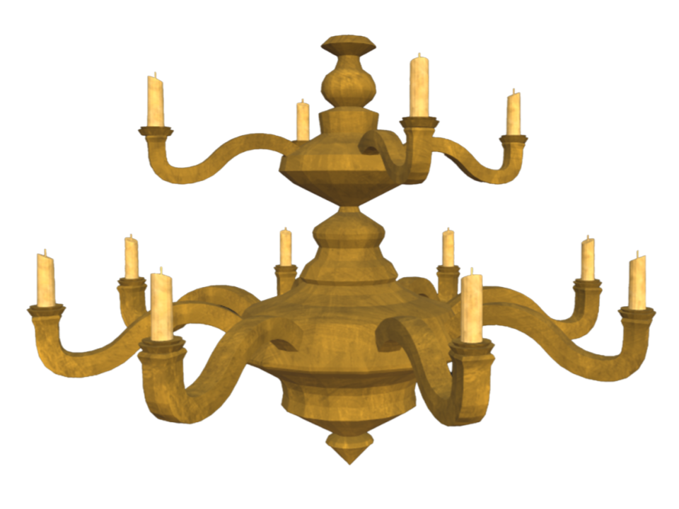
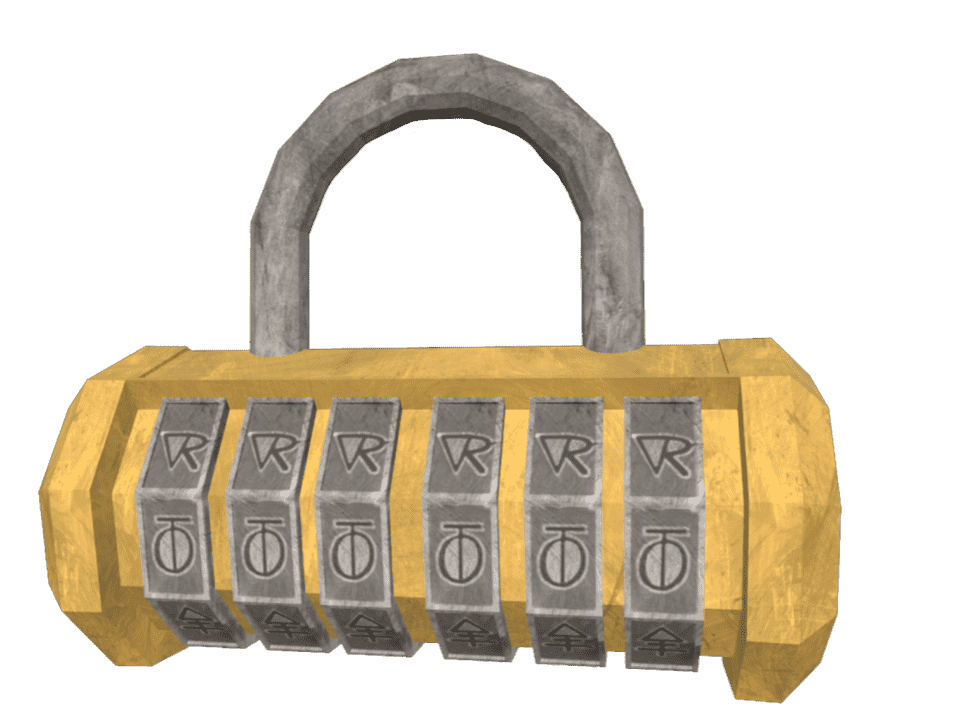

The Drowsy's Mystery
Projet escape game tech art année 2

En début de deuxième année de Tech Art, nous devions réaliser un petit escape game en équipe de deux ou trois personnes. Les consignes étaient simples : créer un prototype dans unity en vue première personne, dans une seule pièce, avec six interactions (trois passives et trois actives). La direction artistique devait s’inspirer d’un dessin animé 2D, mais retranscrit en 3D.
Nous étions trois dans mon équipe, et nous avons choisi Scooby-Doo! Mystery Incorporated. Au-delà de la direction artistique, nous avons aussi décidé de reprendre l’univers : on incarne Sammy, qui entre dans un hôtel à la recherche de Scooby. Pour progresser, il doit explorer le hall et trouver la combinaison d’un petit coffre posé sur le comptoir de la réception.
Je vous invite à essayer le jeu avant de lire la suite si vous souhaitez résoudre l'énigme par vous même. Une vidéo du gameplay est disponible en bas de la page et montre comment résoudre l'énigme.
(ce jeu n'est fonctionnel que sur PC car il nécéssite des contrôles souris/clavier)
Télécharger le zip WindowsSur ce projet, j’ai pris en charge toute la programmation du jeu, du character controller aux interactions du joueur. Nous avons travaillé ensemble sur les VFX, l’ambiance sonore et le level design, mais tout ce qui concerne la logique de jeu, les systèmes d’interaction et les comportements in‑game m’a été confié. Deux mécaniques principales ont demandé un travail plus poussé : la chute du chandelier et l’ouverture du cadenas.
Dans le jeu, le chandelier tombe devant le joueur pour lui bloquer le passage et révéler une feuille indispensable à la résolution de l’énigme. Pour obtenir un résultat léger et cohérent avec notre style cartoon, nous pré découpons le mesh en plusieurs morceaux. J’ai ensuite mis en place un système mêlant rigidbody, triggers et scripts custom. Le chandelier reste suspendu grâce à un rigidbody cinématique, puis, lorsque le joueur entre dans la zone de déclenchement, la physique s’active. À l’impact, chaque morceau est dé‑parenté et reçoit sa propre physique, ce qui permet une chute crédible, des rebonds si le joueur touche une pièce en mouvement, puis un retour à l’état statique une fois la simulation terminée. Les difficultés venaient surtout du timing : si le joueur se déplaçait trop vite, il pouvait passer sous le chandelier en pleine chute et se retrouver bloqué. Il fallait aussi éviter que les collisions perturbent la feuille posée dessus, sans quoi elle devenait impossible à récupérer.

Le cadenas est composé de six roues, d’un corps et d’une fourche. Dans le jeu, chaque roue tourne réellement, et la combinaison est lue après chaque mouvement. Le joueur ne peut tourner les roues que dans un sens, autant de fois qu’il le souhaite. J’ai donc dû gérer la rotation en degrés, avec une marge d’erreur pour compenser les imprécisions de Unity, et faire en sorte que le jeu reconnaisse chaque tour complet de 360°. Cela permettait de calculer correctement la combinaison, sans avoir à hard‑coder toutes les positions possibles. Une fois la bonne combinaison entrée, une animation se déclenche automatiquement : elle verrouille temporairement les contrôles du joueur, ouvre le cadenas et le coffret, et bascule la caméra vers un point de vue rapproché pour révéler le contenu. La caméra secondaire n’est activée qu’au moment du switch pour éviter les coûts inutiles en performance, ce qui demandait une gestion propre des transitions pour ne pas entrer en conflit avec le character controller.

Ce projet a duré trois mois, et comme pour les autres jeux sur lesquels j’ai travaillé, j’ai énormément appris. Je suis fière du résultat que nous avons obtenu, autant sur le plan technique que sur la cohérence artistique.